| 范围 | 刃 | 离心力 g | 板立刃 | 质心内倾 | 折叠角 | 起伏 cm | 最低点 | 内倾最大 | 头倾斜 |
|---|---|---|---|---|---|---|---|---|---|
| 全部弯 | 后刃 | 1.60 | 56° | 46° | 12° | 26 | 31% | 67% | 15° |
| 全部弯 | 前刃 | 1.89 | 59° | 46° | 15° | 20 | 31% | 74% | 15° |
| 大弯 ≥60° | 后刃 | 1.84 | 74° | 55° | 20° | 52 | 25% | 67% | 14° |
| 大弯 ≥60° | 前刃 | 2.12 | 75° | 55° | 21° | 42 | 24% | 68% | 20° |
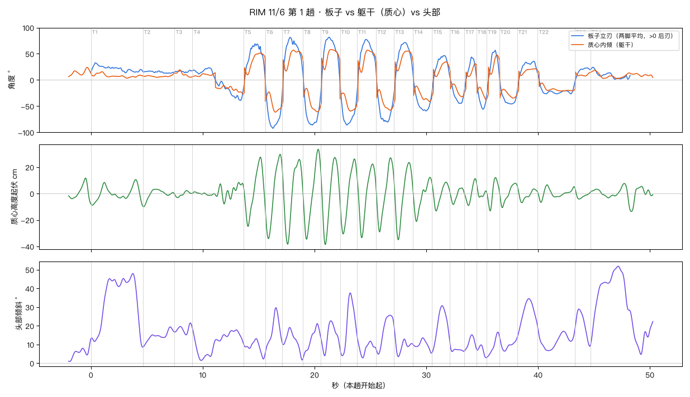
| 弯 | 刃 | 离心力 g | 板立刃 | 质心内倾 | 折叠角 | 起伏 cm | 最低点 | 内倾最大 | 头倾斜 |
|---|---|---|---|---|---|---|---|---|---|
| T1 | 后刃 | 0.51 | 33° | 16° | 17° | 20 | 100% | 21% | 48° |
| T2 | 后刃 | 0.12 | 18° | 13° | 6° | 13 | 2% | 99% | 19° |
| T3 | 后刃 | 0.13 | 22° | 19° | 2° | 5 | 18% | 29% | 22° |
| T4 | 前刃 | 0.69 | 40° | 27° | 13° | 16 | 62% | 100% | 19° |
| T5 | 后刃 | 1.90 | 69° | 52° | 18° | 52 | 21% | 79% | 13° |
| T6 | 前刃 | 2.32 | 92° | 61° | 31° | 64 | 18% | 59% | 30° |
| T7 | 后刃 | 2.24 | 82° | 57° | 25° | 64 | 26% | 53% | 19° |
| T8 | 前刃 | 2.16 | 87° | 61° | 27° | 68 | 20% | 80% | 21° |
| T9 | 后刃 | 2.02 | 82° | 58° | 24° | 66 | 23% | 51% | 23° |
| T10 | 前刃 | 2.27 | 86° | 59° | 27° | 57 | 18% | 62% | 38° |
| T11 | 后刃 | 1.86 | 78° | 57° | 21° | 56 | 24% | 55% | 15° |
| T12 | 前刃 | 2.15 | 83° | 58° | 25° | 56 | 19% | 78% | 26° |
| T13 | 后刃 | 1.67 | 72° | 55° | 16° | 58 | 21% | 71% | 20° |
| T14 | 前刃 | 1.19 | 59° | 41° | 18° | 33 | 19% | 87% | 14° |
| T15 | 后刃 | 0.91 | 47° | 35° | 12° | 22 | 23% | 78% | 31° |
| T16 | 前刃 | 0.93 | 46° | 32° | 14° | 12 | 26% | 85% | 12° |
| T17 | 后刃 | 1.29 | 44° | 31° | 13° | 20 | 33% | 91% | 15° |
| T18 | 前刃 | 1.42 | 56° | 38° | 18° | 11 | 30% | 96% | 10° |
| T19 | 后刃 | 1.74 | 57° | 48° | 9° | 25 | 29% | 82% | 17° |
| T20 | 前刃 | 0.85 | 46° | 40° | 7° | 18 | 18% | 0% | 15° |
| T21 | 后刃 | 0.65 | 36° | 27° | 9° | 13 | 23% | 0% | 35° |
| T22 | 前刃 | 0.55 | 28° | 21° | 7° | 13 | 9% | 64% | 19° |
| T23 | 后刃 | 0.47 | 25° | 18° | 7° | 9 | 27% | 0% | 29° |
| T24 | 后刃 | 0.29 | 24° | 19° | 6° | 21 | 99% | 11% | 52° |
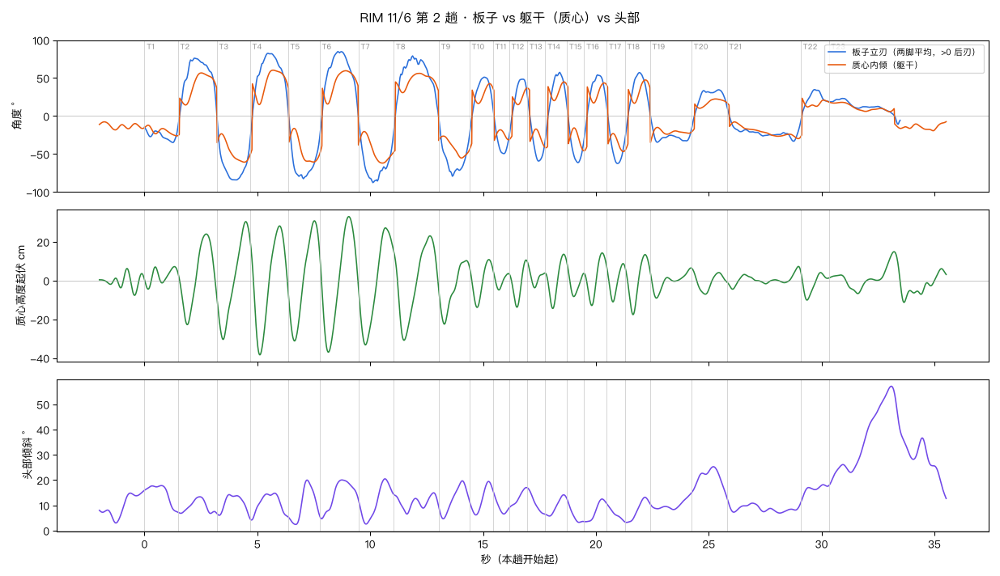
| 弯 | 刃 | 离心力 g | 板立刃 | 质心内倾 | 折叠角 | 起伏 cm | 最低点 | 内倾最大 | 头倾斜 |
|---|---|---|---|---|---|---|---|---|---|
| T1 | 前刃 | 0.87 | 35° | 26° | 9° | 12 | 11% | 96% | 18° |
| T2 | 后刃 | 1.68 | 76° | 57° | 20° | 47 | 24% | 60% | 13° |
| T3 | 前刃 | 2.29 | 84° | 61° | 23° | 61 | 19% | 82% | 14° |
| T4 | 后刃 | 1.97 | 83° | 60° | 23° | 67 | 26% | 61% | 15° |
| T5 | 前刃 | 2.22 | 82° | 60° | 22° | 62 | 20% | 80% | 20° |
| T6 | 后刃 | 1.79 | 85° | 60° | 26° | 70 | 22% | 67% | 20° |
| T7 | 前刃 | 2.68 | 88° | 62° | 26° | 60 | 19% | 68% | 20° |
| T8 | 后刃 | 1.76 | 79° | 56° | 23° | 54 | 23% | 57% | 15° |
| T9 | 前刃 | 2.05 | 79° | 55° | 24° | 33 | 18% | 74% | 20° |
| T10 | 后刃 | 1.35 | 52° | 44° | 7° | 25 | 33% | 0% | 19° |
| T11 | 前刃 | 1.56 | 50° | 37° | 13° | 11 | 36% | 0% | 16° |
| T12 | 后刃 | 1.52 | 49° | 37° | 12° | 24 | 42% | 98% | 17° |
| T13 | 前刃 | 2.18 | 59° | 41° | 18° | 14 | 40% | 98% | 17° |
| T14 | 后刃 | 1.71 | 58° | 45° | 13° | 28 | 35% | 85% | 14° |
| T15 | 前刃 | 2.03 | 61° | 46° | 16° | 17 | 39% | 97% | 13° |
| T16 | 后刃 | 1.53 | 54° | 46° | 9° | 27 | 34% | 0% | 12° |
| T17 | 前刃 | 2.00 | 63° | 47° | 16° | 20 | 35% | 92% | 11° |
| T18 | 后刃 | 1.54 | 58° | 47° | 10° | 31 | 32% | 82% | 13° |
| T19 | 前刃 | 0.95 | 35° | 37° | -2° | 16 | 15% | 0% | 15° |
| T20 | 后刃 | 0.70 | 35° | 23° | 13° | 13 | 40% | 68% | 25° |
| T21 | 前刃 | 0.79 | 33° | 30° | 3° | 12 | 8% | 96% | 13° |
| T22 | 后刃 | 0.93 | 37° | 27° | 10° | 15 | 23% | 0% | 18° |
| T23 | 前刃 | 0.28 | 11° | 18° | -7° | 22 | 40% | 0% | 57° |
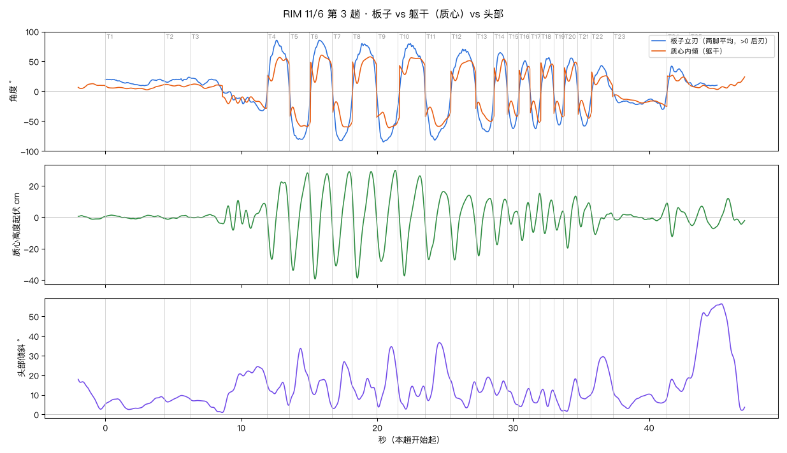
| 弯 | 刃 | 离心力 g | 板立刃 | 质心内倾 | 折叠角 | 起伏 cm | 最低点 | 内倾最大 | 头倾斜 |
|---|---|---|---|---|---|---|---|---|---|
| T1 | 后刃 | 0.23 | 22° | 11° | 10° | 2 | 51% | 100% | 9° |
| T2 | 后刃 | 0.28 | 25° | 12° | 13° | 2 | 12% | 6% | 10° |
| T3 | 前刃 | 0.67 | 33° | 29° | 4° | 19 | 56% | 99% | 24° |
| T4 | 后刃 | 1.87 | 85° | 57° | 29° | 49 | 22% | 57% | 16° |
| T5 | 前刃 | 2.32 | 81° | 59° | 22° | 62 | 19% | 89% | 34° |
| T6 | 后刃 | 1.96 | 85° | 61° | 25° | 67 | 25% | 55% | 18° |
| T7 | 前刃 | 2.21 | 83° | 60° | 23° | 60 | 19% | 81% | 27° |
| T8 | 后刃 | 1.97 | 80° | 58° | 22° | 68 | 23% | 74% | 18° |
| T9 | 前刃 | 2.21 | 85° | 61° | 24° | 58 | 21% | 59% | 35° |
| T10 | 后刃 | 1.92 | 80° | 56° | 24° | 64 | 24% | 49% | 16° |
| T11 | 前刃 | 1.84 | 82° | 59° | 23° | 43 | 14% | 54% | 37° |
| T12 | 后刃 | 1.49 | 71° | 51° | 20° | 41 | 17% | 77% | 18° |
| T13 | 前刃 | 1.93 | 68° | 50° | 17° | 37 | 17% | 86% | 19° |
| T14 | 后刃 | 1.71 | 65° | 54° | 11° | 29 | 29% | 75% | 17° |
| T15 | 前刃 | 1.86 | 63° | 42° | 21° | 13 | 35% | 88% | 13° |
| T16 | 后刃 | 1.53 | 51° | 42° | 10° | 24 | 36% | 90% | 13° |
| T17 | 前刃 | 2.49 | 63° | 52° | 11° | 25 | 34% | 97% | 13° |
| T18 | 后刃 | 1.75 | 56° | 52° | 4° | 26 | 36% | 0% | 13° |
| T19 | 前刃 | 2.36 | 57° | 43° | 14° | 14 | 36% | 97% | 12° |
| T20 | 后刃 | 1.57 | 56° | 49° | 7° | 33 | 31% | 87% | 18° |
| T21 | 前刃 | 1.75 | 58° | 45° | 13° | 15 | 27% | 88% | 15° |
| T22 | 后刃 | 0.79 | 43° | 41° | 3° | 17 | 22% | 0% | 29° |
| T23 | 前刃 | 0.54 | 30° | 25° | 5° | 11 | 82% | 99% | 13° |
| T24 | 后刃 | 0.98 | 42° | 27° | 15° | 21 | 24% | 25% | 19° |
| T25 | 后刃 | 0.13 | 15° | 11° | 4° | 14 | 85% | 0% | 56° |
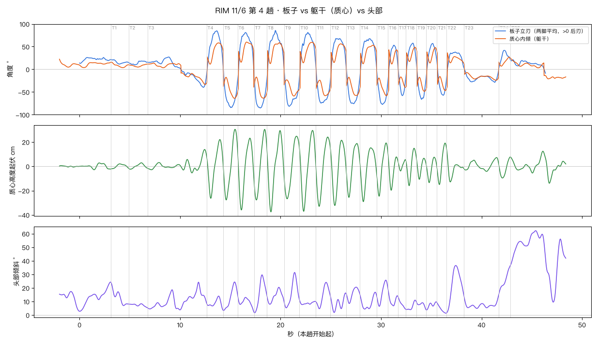
| 弯 | 刃 | 离心力 g | 板立刃 | 质心内倾 | 折叠角 | 起伏 cm | 最低点 | 内倾最大 | 头倾斜 |
|---|---|---|---|---|---|---|---|---|---|
| T1 | 后刃 | 0.25 | 23° | 16° | 7° | 4 | 0% | 2% | 24° |
| T2 | 后刃 | 0.27 | 20° | 12° | 8° | 5 | 10% | 99% | 8° |
| T3 | 前刃 | 0.27 | 40° | 33° | 6° | 19 | 75% | 97% | 24° |
| T4 | 后刃 | 1.76 | 85° | 58° | 26° | 48 | 25% | 71% | 14° |
| T5 | 前刃 | 2.35 | 85° | 64° | 21° | 58 | 20% | 79% | 24° |
| T6 | 后刃 | 1.96 | 81° | 60° | 21° | 59 | 23% | 55% | 15° |
| T7 | 前刃 | 2.40 | 86° | 63° | 22° | 58 | 19% | 73% | 30° |
| T8 | 后刃 | 2.16 | 86° | 58° | 28° | 67 | 23% | 73% | 20° |
| T9 | 前刃 | 2.30 | 81° | 59° | 23° | 52 | 20% | 64% | 31° |
| T10 | 后刃 | 1.81 | 81° | 60° | 22° | 67 | 26% | 74% | 11° |
| T11 | 前刃 | 2.14 | 74° | 58° | 16° | 57 | 22% | 64% | 24° |
| T12 | 后刃 | 1.61 | 68° | 56° | 12° | 54 | 28% | 67% | 16° |
| T13 | 前刃 | 2.01 | 76° | 58° | 19° | 44 | 21% | 74% | 21° |
| T14 | 后刃 | 1.59 | 68° | 53° | 14° | 44 | 21% | 79% | 17° |
| T15 | 前刃 | 2.51 | 77° | 58° | 19° | 44 | 21% | 86% | 26° |
| T16 | 后刃 | 1.44 | 53° | 53° | 0° | 31 | 34% | 0% | 20° |
| T17 | 前刃 | 1.99 | 58° | 40° | 18° | 9 | 32% | 92% | 14° |
| T18 | 后刃 | 1.39 | 58° | 49° | 9° | 31 | 31% | 87% | 11° |
| T19 | 前刃 | 2.06 | 66° | 48° | 18° | 17 | 29% | 83% | 10° |
| T20 | 后刃 | 1.51 | 57° | 48° | 9° | 21 | 28% | 85% | 10° |
| T21 | 前刃 | 1.67 | 57° | 47° | 10° | 34 | 25% | 85% | 9° |
| T22 | 后刃 | 0.90 | 38° | 43° | -5° | 27 | 21% | 0% | 37° |
| T23 | 前刃 | 0.57 | 30° | 24° | 6° | 11 | 65% | 92% | 15° |
| T24 | 后刃 | 1.05 | 42° | 27° | 15° | 17 | 31% | 88% | 36° |
| T25 | 后刃 | 0.24 | 21° | 24° | -3° | 18 | 62% | 0% | 62° |
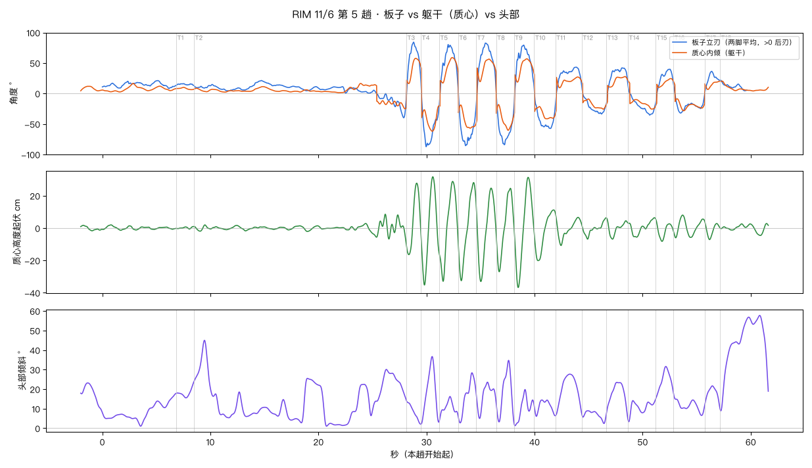
| 弯 | 刃 | 离心力 g | 板立刃 | 质心内倾 | 折叠角 | 起伏 cm | 最低点 | 内倾最大 | 头倾斜 |
|---|---|---|---|---|---|---|---|---|---|
| T1 | 后刃 | 0.17 | 18° | 10° | 8° | 2 | 74% | 43% | 24° |
| T2 | 前刃 | 0.21 | 40° | 25° | 15° | 17 | 100% | 99% | 45° |
| T3 | 后刃 | 1.92 | 84° | 58° | 27° | 44 | 18% | 65% | 14° |
| T4 | 前刃 | 2.59 | 87° | 62° | 25° | 67 | 19% | 63% | 37° |
| T5 | 后刃 | 1.82 | 81° | 59° | 22° | 62 | 22% | 68% | 16° |
| T6 | 前刃 | 2.52 | 88° | 57° | 31° | 61 | 18% | 67% | 28° |
| T7 | 后刃 | 1.77 | 83° | 56° | 27° | 58 | 23% | 64% | 24° |
| T8 | 前刃 | 2.23 | 86° | 60° | 26° | 52 | 17% | 68% | 35° |
| T9 | 后刃 | 1.89 | 79° | 57° | 23° | 68 | 21% | 64% | 20° |
| T10 | 前刃 | 1.19 | 58° | 42° | 17° | 31 | 18% | 61% | 14° |
| T11 | 后刃 | 0.73 | 44° | 34° | 10° | 20 | 21% | 0% | 28° |
| T12 | 前刃 | 0.64 | 35° | 26° | 9° | 13 | 24% | 88% | 9° |
| T13 | 后刃 | 0.83 | 42° | 28° | 14° | 13 | 28% | 86% | 23° |
| T14 | 前刃 | 0.68 | 36° | 26° | 10° | 12 | 31% | 86% | 15° |
| T15 | 后刃 | 0.69 | 40° | 24° | 16° | 14 | 37% | 85% | 32° |
| T16 | 前刃 | 0.69 | 32° | 28° | 4° | 14 | 8% | 33% | 18° |
| T17 | 后刃 | 0.79 | 36° | 20° | 16° | 11 | 30% | 99% | 22° |
| T18 | 后刃 | 0.25 | 22° | 20° | 2° | 4 | 44% | 8% | 56° |
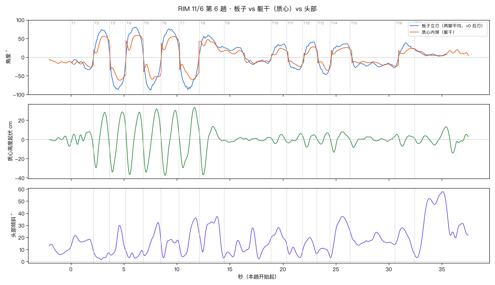
| 弯 | 刃 | 离心力 g | 板立刃 | 质心内倾 | 折叠角 | 起伏 cm | 最低点 | 内倾最大 | 头倾斜 |
|---|---|---|---|---|---|---|---|---|---|
| T1 | 前刃 | 0.73 | 34° | 27° | 7° | 15 | 99% | 89% | 22° |
| T2 | 后刃 | 1.89 | 74° | 56° | 18° | 58 | 17% | 67% | 9° |
| T3 | 前刃 | 2.64 | 87° | 62° | 25° | 63 | 18% | 63% | 30° |
| T4 | 后刃 | 1.93 | 81° | 58° | 22° | 65 | 24% | 76% | 10° |
| T5 | 前刃 | 2.03 | 88° | 59° | 29° | 66 | 18% | 51% | 32° |
| T6 | 后刃 | 1.75 | 77° | 55° | 22° | 68 | 24% | 70% | 19° |
| T7 | 前刃 | 2.28 | 88° | 60° | 28° | 63 | 20% | 67% | 36° |
| T8 | 后刃 | 1.15 | 60° | 47° | 13° | 51 | 16% | 34% | 37° |
| T9 | 后刃 | 0.37 | 30° | 19° | 12° | 5 | 12% | 4% | 28° |
| T10 | 后刃 | 0.64 | 36° | 24° | 12° | 10 | 27% | 64% | 28° |
| T11 | 前刃 | 0.66 | 35° | 26° | 8° | 10 | 12% | 84% | 14° |
| T12 | 后刃 | 0.88 | 42° | 28° | 14° | 13 | 31% | 78% | 20° |
| T13 | 前刃 | 1.08 | 47° | 36° | 11° | 12 | 32% | 82% | 11° |
| T14 | 后刃 | 0.68 | 36° | 29° | 7° | 21 | 20% | 0% | 37° |
| T15 | 前刃 | 0.58 | 29° | 24° | 5° | 11 | 8% | 100% | 26° |
| T16 | 后刃 | 0.89 | 39° | 25° | 14° | 12 | 39% | 5% | 28° |
| T17 | 后刃 | 0.20 | 23° | 23° | -0° | 19 | 62% | 0% | 58° |
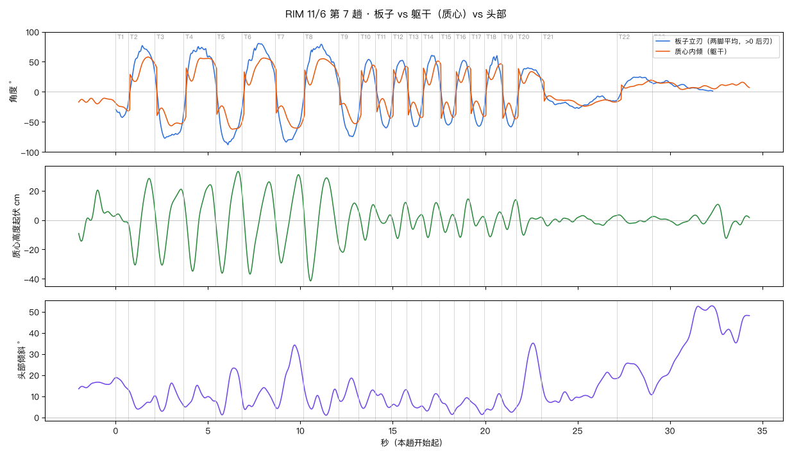
| 弯 | 刃 | 离心力 g | 板立刃 | 质心内倾 | 折叠角 | 起伏 cm | 最低点 | 内倾最大 | 头倾斜 |
|---|---|---|---|---|---|---|---|---|---|
| T1 | 前刃 | 1.17 | 43° | 32° | 11° | 6 | 97% | 97% | 19° |
| T2 | 后刃 | 1.78 | 77° | 58° | 19° | 59 | 25% | 75% | 13° |
| T3 | 前刃 | 1.96 | 77° | 56° | 21° | 52 | 24% | 56% | 16° |
| T4 | 后刃 | 2.18 | 76° | 56° | 21° | 59 | 28% | 53% | 15° |
| T5 | 前刃 | 2.45 | 88° | 62° | 26° | 69 | 25% | 64% | 23° |
| T6 | 后刃 | 1.64 | 80° | 56° | 24° | 63 | 24% | 66% | 14° |
| T7 | 前刃 | 2.36 | 84° | 60° | 24° | 60 | 21% | 78% | 34° |
| T8 | 后刃 | 1.68 | 79° | 55° | 24° | 70 | 20% | 55% | 16° |
| T9 | 前刃 | 2.07 | 74° | 53° | 22° | 34 | 20% | 81% | 19° |
| T10 | 后刃 | 1.70 | 54° | 47° | 7° | 24 | 39% | 0% | 13° |
| T11 | 前刃 | 1.82 | 60° | 44° | 16° | 11 | 52% | 95% | 12° |
| T12 | 后刃 | 1.68 | 53° | 43° | 9° | 25 | 40% | 0% | 13° |
| T13 | 前刃 | 1.86 | 58° | 43° | 15° | 17 | 40% | 98% | 13° |
| T14 | 后刃 | 1.73 | 61° | 51° | 10° | 24 | 35% | 92% | 11° |
| T15 | 前刃 | 1.83 | 55° | 50° | 5° | 16 | 40% | 0% | 9° |
| T16 | 后刃 | 1.55 | 52° | 42° | 10° | 26 | 40% | 93% | 9° |
| T17 | 前刃 | 1.93 | 57° | 41° | 16° | 17 | 42% | 0% | 8° |
| T18 | 后刃 | 1.89 | 61° | 47° | 14° | 17 | 35% | 96% | 11° |
| T19 | 前刃 | 2.01 | 58° | 46° | 12° | 20 | 40% | 0% | 9° |
| T20 | 后刃 | 1.10 | 40° | 45° | -5° | 24 | 29% | 0% | 35° |
| T21 | 前刃 | 0.43 | 27° | 24° | 4° | 7 | 8% | 58% | 21° |
| T22 | 后刃 | 0.52 | 27° | 19° | 8° | 6 | 39% | 97% | 26° |
| T23 | 后刃 | 0.21 | 19° | 19° | -0° | 9 | 41% | 0% | 53° |
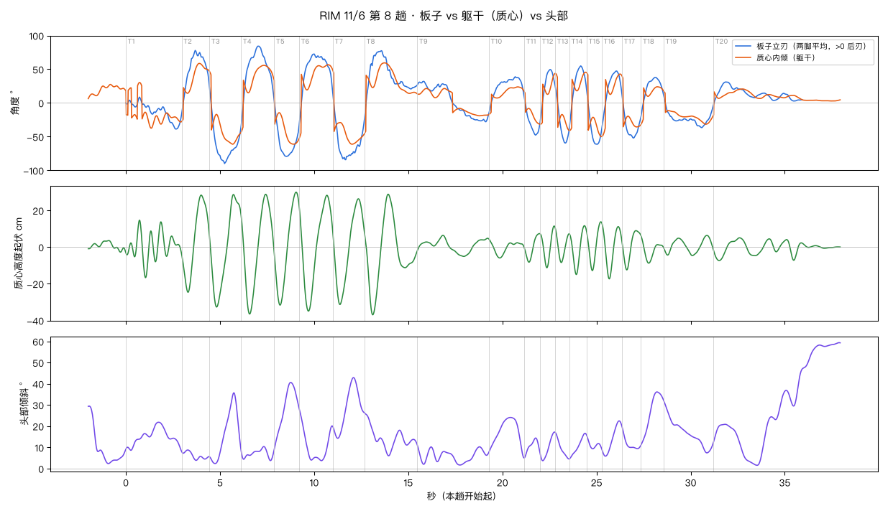
| 弯 | 刃 | 离心力 g | 板立刃 | 质心内倾 | 折叠角 | 起伏 cm | 最低点 | 内倾最大 | 头倾斜 |
|---|---|---|---|---|---|---|---|---|---|
| T1 | 前刃 | 0.85 | 39° | 37° | 2° | 31 | 35% | 45% | 22° |
| T2 | 后刃 | 1.97 | 78° | 59° | 19° | 53 | 23% | 64% | 9° |
| T3 | 前刃 | 2.83 | 91° | 61° | 29° | 61 | 23% | 74% | 36° |
| T4 | 后刃 | 1.86 | 84° | 56° | 28° | 65 | 26% | 68% | 10° |
| T5 | 前刃 | 2.05 | 79° | 61° | 18° | 62 | 23% | 79% | 41° |
| T6 | 后刃 | 1.84 | 73° | 57° | 16° | 63 | 28% | 86% | 28° |
| T7 | 前刃 | 2.33 | 84° | 61° | 23° | 58 | 21% | 61% | 43° |
| T8 | 后刃 | 2.02 | 78° | 59° | 18° | 66 | 16% | 38% | 26° |
| T9 | 后刃 | 0.46 | 35° | 22° | 13° | 11 | 65% | 38% | 11° |
| T10 | 后刃 | 0.75 | 39° | 24° | 15° | 10 | 31% | 82% | 24° |
| T11 | 前刃 | 1.55 | 48° | 31° | 16° | 16 | 31% | 98% | 14° |
| T12 | 后刃 | 1.56 | 50° | 44° | 6° | 23 | 45% | 98% | 17° |
| T13 | 前刃 | 1.90 | 60° | 44° | 16° | 19 | 42% | 0% | 17° |
| T14 | 后刃 | 1.67 | 56° | 46° | 10° | 27 | 39% | 93% | 17° |
| T15 | 前刃 | 1.92 | 62° | 50° | 12° | 27 | 38% | 98% | 16° |
| T16 | 后刃 | 1.29 | 48° | 50° | -2° | 30 | 37% | 0% | 23° |
| T17 | 前刃 | 1.25 | 52° | 40° | 12° | 21 | 24% | 0% | 20° |
| T18 | 后刃 | 0.73 | 38° | 32° | 6° | 15 | 35% | 0% | 36° |
| T19 | 前刃 | 0.66 | 37° | 31° | 5° | 11 | 58% | 85% | 32° |
| T20 | 后刃 | 0.75 | 33° | 20° | 13° | 12 | 24% | 99% | 21° |
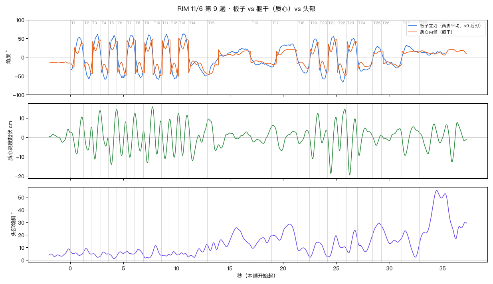
| 弯 | 刃 | 离心力 g | 板立刃 | 质心内倾 | 折叠角 | 起伏 cm | 最低点 | 内倾最大 | 头倾斜 |
|---|---|---|---|---|---|---|---|---|---|
| T1 | 后刃 | 1.43 | 53° | 38° | 14° | 19 | 48% | 89% | 7° |
| T2 | 前刃 | 2.37 | 59° | 41° | 17° | 13 | 58% | 97% | 9° |
| T3 | 后刃 | 1.91 | 61° | 46° | 14° | 25 | 41% | 93% | 5° |
| T4 | 前刃 | 2.67 | 60° | 45° | 15° | 18 | 69% | 0% | 6° |
| T5 | 后刃 | 1.94 | 58° | 42° | 16° | 28 | 38% | 98% | 5° |
| T6 | 前刃 | 1.97 | 57° | 49° | 8° | 24 | 52% | 98% | 7° |
| T7 | 后刃 | 2.01 | 60° | 49° | 11° | 22 | 45% | 0% | 7° |
| T8 | 前刃 | 2.21 | 56° | 47° | 9° | 20 | 64% | 0% | 9° |
| T9 | 后刃 | 1.99 | 60° | 47° | 13° | 29 | 41% | 98% | 6° |
| T10 | 前刃 | 2.22 | 60° | 50° | 10° | 24 | 48% | 98% | 11° |
| T11 | 后刃 | 2.17 | 61° | 50° | 11° | 20 | 45% | 0% | 4° |
| T12 | 前刃 | 2.43 | 58° | 49° | 9° | 21 | 55% | 97% | 7° |
| T13 | 后刃 | 1.72 | 63° | 51° | 12° | 22 | 46% | 6% | 6° |
| T14 | 前刃 | 1.05 | 50° | 46° | 4° | 21 | 22% | 0% | 12° |
| T15 | 前刃 | 0.30 | 47° | 46° | 1° | 16 | 19% | 3% | 26° |
| T16 | 前刃 | 0.42 | 25° | 18° | 7° | 9 | 60% | 99% | 20° |
| T17 | 后刃 | 0.65 | 35° | 21° | 14° | 13 | 39% | 81% | 29° |
| T18 | 前刃 | 0.96 | 43° | 30° | 13° | 7 | 19% | 86% | 11° |
| T19 | 后刃 | 1.45 | 49° | 39° | 10° | 24 | 34% | 91% | 14° |
| T20 | 前刃 | 1.83 | 58° | 41° | 17° | 13 | 38% | 95% | 14° |
| T21 | 后刃 | 1.66 | 55° | 49° | 7° | 29 | 37% | 85% | 19° |
| T22 | 前刃 | 2.09 | 66° | 49° | 18° | 21 | 29% | 95% | 18° |
| T23 | 后刃 | 1.39 | 50° | 48° | 2° | 31 | 33% | 0% | 24° |
| T24 | 前刃 | 0.82 | 37° | 38° | -1° | 14 | 12% | 0% | 19° |
| T25 | 后刃 | 0.68 | 29° | 16° | 13° | 5 | 43% | 98% | 29° |
| T26 | 前刃 | 0.62 | 29° | 24° | 5° | 6 | 39% | 85% | 27° |
| T27 | 后刃 | 0.70 | 31° | 18° | 14° | 15 | 20% | 0% | 23° |
| T28 | 后刃 | 0.24 | 17° | 17° | -0° | 16 | 34% | 11% | 55° |
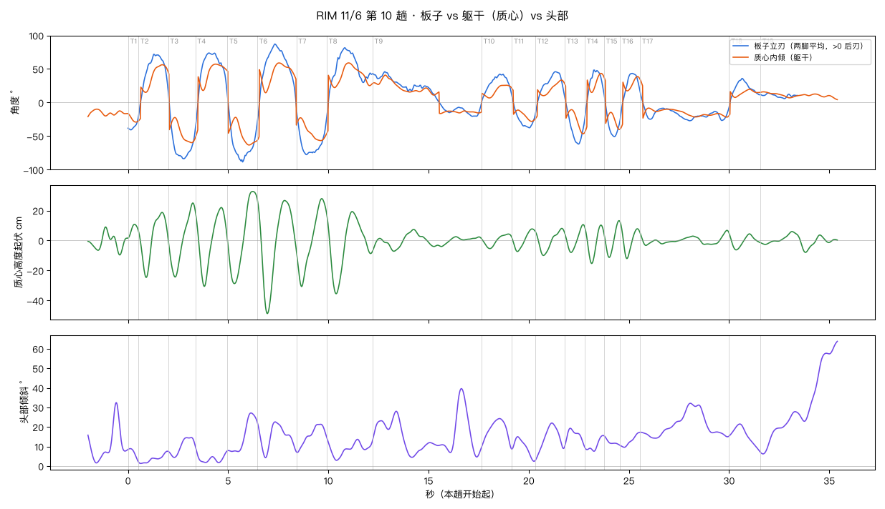
| 弯 | 刃 | 离心力 g | 板立刃 | 质心内倾 | 折叠角 | 起伏 cm | 最低点 | 内倾最大 | 头倾斜 |
|---|---|---|---|---|---|---|---|---|---|
| T1 | 前刃 | 0.85 | 41° | 29° | 12° | 9 | 0% | 77% | 9° |
| T2 | 后刃 | 1.86 | 73° | 56° | 17° | 43 | 26% | 80% | 8° |
| T3 | 前刃 | 2.35 | 84° | 60° | 24° | 49 | 26% | 85% | 15° |
| T4 | 后刃 | 1.86 | 74° | 57° | 17° | 53 | 28% | 62% | 10° |
| T5 | 前刃 | 2.13 | 89° | 63° | 25° | 61 | 23% | 73% | 27° |
| T6 | 后刃 | 1.74 | 88° | 59° | 29° | 77 | 27% | 56% | 23° |
| T7 | 前刃 | 1.96 | 78° | 57° | 21° | 59 | 17% | 80% | 21° |
| T8 | 后刃 | 1.77 | 82° | 59° | 23° | 55 | 20% | 47% | 15° |
| T9 | 后刃 | 0.66 | 46° | 41° | 5° | 15 | 0% | 12% | 40° |
| T10 | 后刃 | 0.78 | 42° | 26° | 17° | 10 | 28% | 83% | 24° |
| T11 | 前刃 | 0.84 | 38° | 28° | 10° | 15 | 24% | 84% | 15° |
| T12 | 后刃 | 1.13 | 46° | 34° | 12° | 18 | 28% | 88% | 22° |
| T13 | 前刃 | 1.84 | 62° | 46° | 15° | 19 | 30% | 90% | 19° |
| T14 | 后刃 | 1.33 | 50° | 44° | 6° | 26 | 35% | 0% | 16° |
| T15 | 前刃 | 1.65 | 51° | 40° | 11° | 25 | 32% | 95% | 15° |
| T16 | 后刃 | 1.22 | 44° | 39° | 5° | 24 | 34% | 0% | 17° |
| T17 | 前刃 | 0.56 | 28° | 34° | -7° | 10 | 6% | 0% | 32° |
| T18 | 后刃 | 0.82 | 36° | 20° | 17° | 11 | 23% | 65% | 21° |
| T19 | 后刃 | 0.17 | 14° | 16° | -2° | 9 | 13% | 9% | 28° |
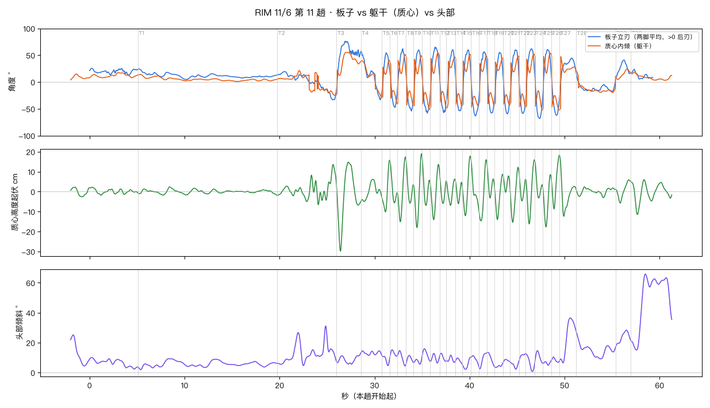
| 弯 | 刃 | 离心力 g | 板立刃 | 质心内倾 | 折叠角 | 起伏 cm | 最低点 | 内倾最大 | 头倾斜 |
|---|---|---|---|---|---|---|---|---|---|
| T1 | 后刃 | 0.27 | 24° | 14° | 10° | 2 | 12% | 17% | 6° |
| T2 | 前刃 | 0.67 | 35° | 25° | 10° | 20 | 69% | 96% | 31° |
| T3 | 后刃 | 1.76 | 78° | 55° | 23° | 45 | 16% | 40% | 13° |
| T4 | 后刃 | 0.78 | 58° | 40° | 18° | 11 | 0% | 5% | 15° |
| T5 | 后刃 | 1.66 | 56° | 41° | 15° | 26 | 45% | 93% | 11° |
| T6 | 前刃 | 1.95 | 48° | 39° | 9° | 21 | 63% | 0% | 15° |
| T7 | 后刃 | 1.95 | 63° | 51° | 12° | 32 | 38% | 92% | 15° |
| T8 | 前刃 | 2.28 | 54° | 48° | 6° | 21 | 55% | 0% | 11° |
| T9 | 后刃 | 1.93 | 60° | 49° | 11° | 37 | 43% | 95% | 9° |
| T10 | 前刃 | 2.17 | 59° | 51° | 8° | 26 | 50% | 95% | 16° |
| T11 | 后刃 | 1.87 | 65° | 54° | 11° | 28 | 38% | 84% | 13° |
| T12 | 前刃 | 2.27 | 58° | 48° | 10° | 16 | 50% | 97% | 13° |
| T13 | 后刃 | 2.06 | 60° | 49° | 11° | 13 | 46% | 2% | 12° |
| T14 | 前刃 | 1.97 | 55° | 45° | 10° | 11 | 42% | 94% | 10° |
| T15 | 后刃 | 1.64 | 60° | 51° | 9° | 30 | 35% | 89% | 10° |
| T16 | 前刃 | 1.91 | 63° | 48° | 15° | 25 | 98% | 0% | 11° |
| T17 | 后刃 | 1.77 | 56° | 48° | 8° | 31 | 24% | 90% | 13° |
| T18 | 前刃 | 1.84 | 59° | 46° | 12° | 17 | 42% | 0% | 13° |
| T19 | 后刃 | 1.86 | 55° | 45° | 11° | 23 | 35% | 96% | 6° |
| T20 | 前刃 | 1.92 | 60° | 44° | 16° | 9 | 39% | 0% | 9° |
| T21 | 后刃 | 1.72 | 61° | 48° | 13° | 28 | 31% | 96% | 7° |
| T22 | 前刃 | 2.13 | 60° | 48° | 12° | 14 | 44% | 0% | 13° |
| T23 | 后刃 | 1.94 | 63° | 52° | 11° | 32 | 40% | 88% | 13° |
| T24 | 前刃 | 2.27 | 68° | 52° | 16° | 19 | 50% | 98% | 15° |
| T25 | 后刃 | 1.81 | 61° | 54° | 8° | 26 | 39% | 89% | 8° |
| T26 | 前刃 | 2.35 | 63° | 52° | 10° | 27 | 34% | 95% | 10° |
| T27 | 后刃 | 0.79 | 45° | 52° | -7° | 30 | 26% | 0% | 37° |
| T28 | 前刃 | 0.37 | 19° | 23° | -5° | 5 | 69% | 0% | 28° |
| T29 | 后刃 | 0.86 | 42° | 24° | 18° | 12 | 31% | 75% | 28° |
| T30 | 后刃 | 0.31 | 24° | 19° | 5° | 17 | 30% | 18% | 66° |
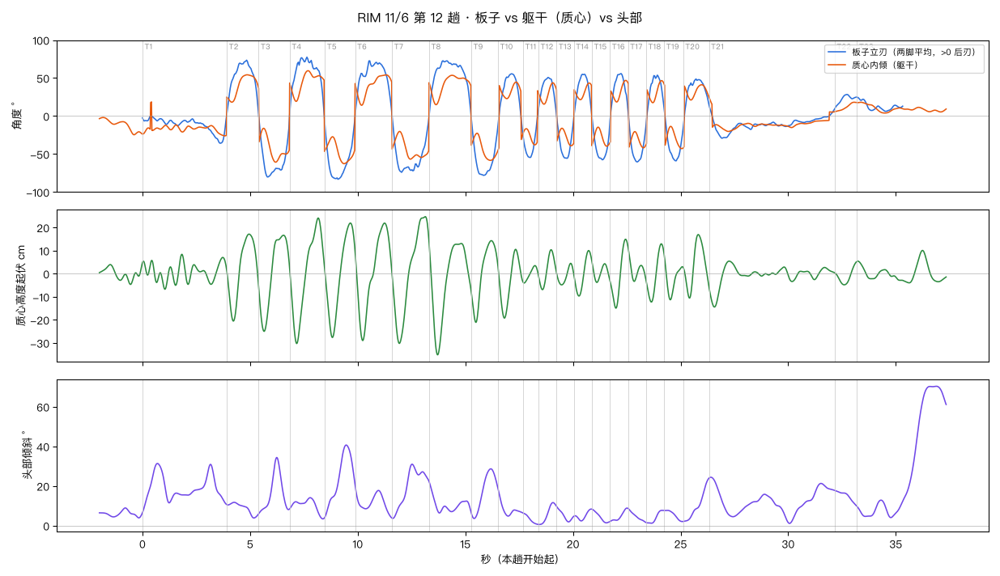
| 弯 | 刃 | 离心力 g | 板立刃 | 质心内倾 | 折叠角 | 起伏 cm | 最低点 | 内倾最大 | 头倾斜 |
|---|---|---|---|---|---|---|---|---|---|
| T1 | 前刃 | 0.72 | 37° | 26° | 11° | 15 | 27% | 98% | 31° |
| T2 | 后刃 | 1.70 | 74° | 54° | 20° | 38 | 20% | 64% | 12° |
| T3 | 前刃 | 2.51 | 81° | 61° | 20° | 42 | 18% | 54% | 34° |
| T4 | 后刃 | 1.89 | 79° | 60° | 20° | 54 | 20% | 52% | 14° |
| T5 | 前刃 | 2.13 | 83° | 63° | 21° | 50 | 24% | 63% | 41° |
| T6 | 后刃 | 2.07 | 74° | 54° | 20° | 51 | 21% | 84% | 20° |
| T7 | 前刃 | 2.41 | 75° | 57° | 18° | 55 | 20% | 50% | 31° |
| T8 | 后刃 | 1.59 | 74° | 54° | 21° | 48 | 20% | 54% | 22° |
| T9 | 前刃 | 1.95 | 79° | 58° | 21° | 35 | 18% | 73% | 29° |
| T10 | 后刃 | 1.60 | 57° | 45° | 12° | 30 | 26% | 0% | 19° |
| T11 | 前刃 | 1.86 | 56° | 38° | 18° | 8 | 8% | 78% | 6° |
| T12 | 后刃 | 1.37 | 53° | 44° | 9° | 17 | 21% | 79% | 12° |
| T13 | 前刃 | 2.13 | 56° | 39° | 17° | 9 | 30% | 85% | 10° |
| T14 | 后刃 | 1.68 | 57° | 43° | 13° | 20 | 29% | 86% | 8° |
| T15 | 前刃 | 1.64 | 58° | 40° | 18° | 9 | 29% | 83% | 8° |
| T16 | 后刃 | 1.66 | 57° | 47° | 10° | 30 | 33% | 88% | 9° |
| T17 | 前刃 | 1.77 | 60° | 44° | 17° | 15 | 33% | 0% | 9° |
| T18 | 后刃 | 1.66 | 54° | 47° | 8° | 25 | 29% | 86% | 8° |
| T19 | 前刃 | 1.85 | 59° | 43° | 16° | 20 | 32% | 93% | 8° |
| T20 | 后刃 | 1.41 | 49° | 42° | 7° | 28 | 25% | 0% | 24° |
| T21 | 前刃 | 0.52 | 29° | 25° | 4° | 20 | 4% | 0% | 24° |
| T22 | 后刃 | 0.56 | 31° | 18° | 12° | 10 | 42% | 87% | 18° |
| T23 | 后刃 | 0.36 | 25° | 18° | 7° | 8 | 99% | 8% | 13° |
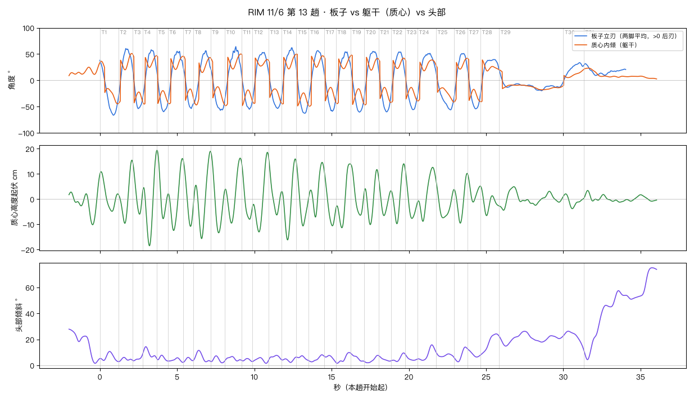
| 弯 | 刃 | 离心力 g | 板立刃 | 质心内倾 | 折叠角 | 起伏 cm | 最低点 | 内倾最大 | 头倾斜 |
|---|---|---|---|---|---|---|---|---|---|
| T1 | 前刃 | 1.88 | 67° | 45° | 22° | 16 | 65% | 95% | 11° |
| T2 | 后刃 | 2.15 | 63° | 51° | 12° | 25 | 46% | 93% | 6° |
| T3 | 前刃 | 2.31 | 57° | 50° | 8° | 21 | 69% | 0% | 8° |
| T4 | 后刃 | 1.80 | 61° | 47° | 14° | 37 | 48% | 98% | 14° |
| T5 | 前刃 | 2.35 | 62° | 47° | 15° | 27 | 58% | 0% | 8° |
| T6 | 后刃 | 1.49 | 62° | 46° | 16° | 29 | 38% | 98% | 6° |
| T7 | 前刃 | 2.03 | 56° | 46° | 10° | 26 | 72% | 0% | 6° |
| T8 | 后刃 | 1.82 | 58° | 47° | 11° | 35 | 48% | 18% | 12° |
| T9 | 前刃 | 2.24 | 61° | 46° | 15° | 32 | 59% | 98% | 7° |
| T10 | 后刃 | 1.68 | 68° | 50° | 18° | 26 | 41% | 96% | 7° |
| T11 | 前刃 | 1.88 | 57° | 50° | 7° | 23 | 75% | 0% | 5° |
| T12 | 后刃 | 1.71 | 57° | 44° | 13° | 32 | 40% | 10% | 6° |
| T13 | 前刃 | 2.23 | 54° | 43° | 11° | 23 | 64% | 98% | 8° |
| T14 | 后刃 | 1.78 | 63° | 50° | 13° | 32 | 42% | 98% | 6° |
| T15 | 前刃 | 1.99 | 64° | 50° | 14° | 25 | 52% | 2% | 7° |
| T16 | 后刃 | 1.78 | 58° | 49° | 9° | 22 | 44% | 6% | 8° |
| T17 | 前刃 | 2.04 | 60° | 44° | 16° | 22 | 71% | 0% | 8° |
| T18 | 后刃 | 1.51 | 63° | 46° | 17° | 25 | 40% | 98% | 10° |
| T19 | 前刃 | 1.90 | 62° | 48° | 14° | 20 | 70% | 7% | 9° |
| T20 | 后刃 | 1.67 | 57° | 47° | 10° | 22 | 41% | 7% | 8° |
| T21 | 前刃 | 1.81 | 61° | 42° | 19° | 15 | 45% | 98% | 7° |
| T22 | 后刃 | 1.69 | 57° | 42° | 15° | 24 | 41% | 89% | 10° |
| T23 | 前刃 | 1.51 | 57° | 40° | 18° | 20 | 55% | 0% | 9° |
| T24 | 后刃 | 1.28 | 54° | 39° | 15° | 21 | 30% | 2% | 16° |
| T25 | 前刃 | 1.41 | 59° | 41° | 18° | 15 | 40% | 98% | 10° |
| T26 | 后刃 | 1.72 | 52° | 42° | 10° | 20 | 48% | 95% | 14° |
| T27 | 前刃 | 1.63 | 55° | 42° | 14° | 11 | 43% | 0% | 13° |
| T28 | 后刃 | 1.01 | 41° | 41° | -0° | 12 | 33% | 3% | 24° |
| T29 | 前刃 | 0.36 | 20° | 20° | -0° | 9 | 7% | 0% | 26° |
| T30 | 后刃 | 0.68 | 35° | 20° | 15° | 6 | 44% | 98% | 26° |
| T31 | 后刃 | 0.45 | 32° | 23° | 8° | 5 | 86% | 11% | 57° |
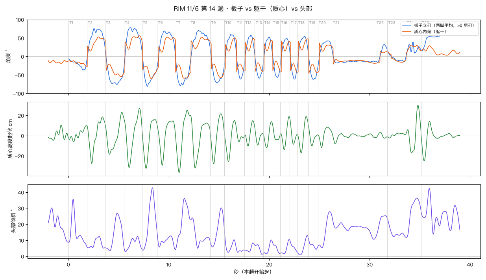
| 弯 | 刃 | 离心力 g | 板立刃 | 质心内倾 | 折叠角 | 起伏 cm | 最低点 | 内倾最大 | 头倾斜 |
|---|---|---|---|---|---|---|---|---|---|
| T1 | 前刃 | 0.88 | 39° | 28° | 11° | 17 | 28% | 99% | 36° |
| T2 | 后刃 | 1.85 | 77° | 53° | 25° | 46 | 27% | 64% | 12° |
| T3 | 前刃 | 1.56 | 76° | 55° | 21° | 41 | 23% | 86% | 27° |
| T4 | 后刃 | 1.81 | 79° | 56° | 23° | 58 | 30% | 87% | 12° |
| T5 | 前刃 | 2.03 | 81° | 60° | 21° | 49 | 28% | 63% | 43° |
| T6 | 后刃 | 1.76 | 73° | 52° | 21° | 44 | 28% | 57% | 15° |
| T7 | 前刃 | 2.17 | 80° | 59° | 21° | 62 | 28% | 62% | 36° |
| T8 | 后刃 | 1.55 | 73° | 52° | 21° | 52 | 26% | 59% | 24° |
| T9 | 前刃 | 1.82 | 73° | 58° | 15° | 49 | 24% | 76% | 30° |
| T10 | 后刃 | 1.47 | 60° | 50° | 10° | 41 | 36% | 88% | 17° |
| T11 | 前刃 | 1.82 | 61° | 46° | 15° | 17 | 36% | 0% | 6° |
| T12 | 后刃 | 1.60 | 59° | 49° | 10° | 25 | 35% | 87% | 8° |
| T13 | 前刃 | 1.57 | 60° | 44° | 16° | 17 | 36% | 0% | 7° |
| T14 | 后刃 | 1.65 | 53° | 43° | 10° | 26 | 39% | 93% | 10° |
| T15 | 前刃 | 1.60 | 57° | 42° | 15° | 17 | 72% | 0% | 10° |
| T16 | 后刃 | 1.52 | 50° | 42° | 7° | 33 | 44% | 10% | 10° |
| T17 | 前刃 | 1.81 | 62° | 43° | 19° | 26 | 50% | 97% | 10° |
| T18 | 后刃 | 1.54 | 58° | 48° | 11° | 36 | 35% | 94% | 13° |
| T19 | 前刃 | 1.57 | 63° | 47° | 16° | 22 | 38% | 0% | 12° |
| T20 | 后刃 | 0.96 | 44° | 44° | -0° | 20 | 27% | 0% | 28° |
| T21 | 前刃 | 0.42 | 18° | 27° | -9° | 11 | 8% | 0% | 25° |
| T22 | 后刃 | 0.68 | 34° | 18° | 16° | 6 | 76% | 0% | 25° |
| T23 | 前刃 | 0.44 | 17° | 16° | 1° | 5 | 12% | 76% | 24° |
| T24 | 后刃 | 0.88 | 47° | 31° | 17° | 47 | 37% | 37% | 36° |
| T25 | 后刃 | 0.07 | 57° | 29° | 28° | 39 | 16% | 45% | 42° |
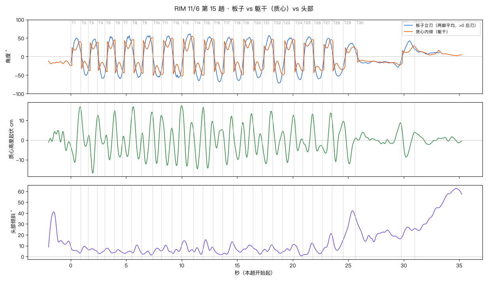
| 弯 | 刃 | 离心力 g | 板立刃 | 质心内倾 | 折叠角 | 起伏 cm | 最低点 | 内倾最大 | 头倾斜 |
|---|---|---|---|---|---|---|---|---|---|
| T1 | 后刃 | 1.49 | 52° | 41° | 12° | 28 | 41% | 93% | 10° |
| T2 | 前刃 | 1.96 | 57° | 40° | 17° | 20 | 68% | 0% | 9° |
| T3 | 后刃 | 1.76 | 52° | 39° | 13° | 28 | 50% | 98% | 7° |
| T4 | 前刃 | 2.42 | 63° | 39° | 24° | 15 | 74% | 3% | 6° |
| T5 | 后刃 | 1.87 | 56° | 44° | 11° | 24 | 50% | 98% | 8° |
| T6 | 前刃 | 2.36 | 63° | 46° | 17° | 23 | 72% | 6% | 6° |
| T7 | 后刃 | 1.62 | 60° | 44° | 16° | 19 | 55% | 17% | 5° |
| T8 | 前刃 | 2.33 | 60° | 46° | 14° | 26 | 73% | 14% | 11° |
| T9 | 后刃 | 1.96 | 60° | 52° | 9° | 26 | 42% | 98% | 5° |
| T10 | 前刃 | 2.08 | 60° | 52° | 9° | 25 | 48% | 0% | 8° |
| T11 | 后刃 | 1.85 | 60° | 50° | 10° | 25 | 56% | 98% | 10° |
| T12 | 前刃 | 2.50 | 62° | 51° | 11° | 30 | 50% | 98% | 8° |
| T13 | 后刃 | 2.00 | 66° | 55° | 11° | 31 | 46% | 93% | 14° |
| T14 | 前刃 | 1.93 | 66° | 53° | 12° | 29 | 43% | 0% | 8° |
| T15 | 后刃 | 1.66 | 55° | 51° | 4° | 31 | 50% | 4% | 15° |
| T16 | 前刃 | 1.89 | 70° | 48° | 22° | 13 | 39% | 0% | 8° |
| T17 | 后刃 | 1.52 | 54° | 48° | 6° | 25 | 40% | 90% | 14° |
| T18 | 前刃 | 2.08 | 66° | 45° | 21° | 15 | 55% | 0% | 12° |
| T19 | 后刃 | 1.60 | 53° | 49° | 4° | 22 | 46% | 10% | 11° |
| T20 | 前刃 | 1.51 | 58° | 45° | 13° | 17 | 40% | 0% | 9° |
| T21 | 后刃 | 1.62 | 58° | 47° | 11° | 27 | 38% | 98% | 11° |
| T22 | 前刃 | 2.03 | 72° | 47° | 25° | 18 | 45% | 98% | 10° |
| T23 | 后刃 | 1.60 | 53° | 50° | 3° | 24 | 44% | 7% | 11° |
| T24 | 前刃 | 1.89 | 64° | 46° | 17° | 18 | 45% | 0% | 11° |
| T25 | 后刃 | 1.72 | 54° | 46° | 8° | 19 | 50% | 98% | 12° |
| T26 | 前刃 | 1.63 | 61° | 46° | 15° | 19 | 48% | 0% | 12° |
| T27 | 后刃 | 1.80 | 53° | 46° | 7° | 20 | 36% | 93% | 21° |
| T28 | 前刃 | 1.19 | 53° | 45° | 8° | 22 | 34% | 0% | 20° |
| T29 | 后刃 | 0.78 | 38° | 35° | 2° | 22 | 52% | 0% | 42° |
| T30 | 前刃 | 0.64 | 30° | 23° | 8° | 11 | 57% | 0% | 37° |
| T31 | 后刃 | 1.10 | 46° | 29° | 17° | 17 | 38% | 97% | 27° |
| T32 | 后刃 | 0.25 | 21° | 28° | -7° | 6 | 57% | 0% | 45° |
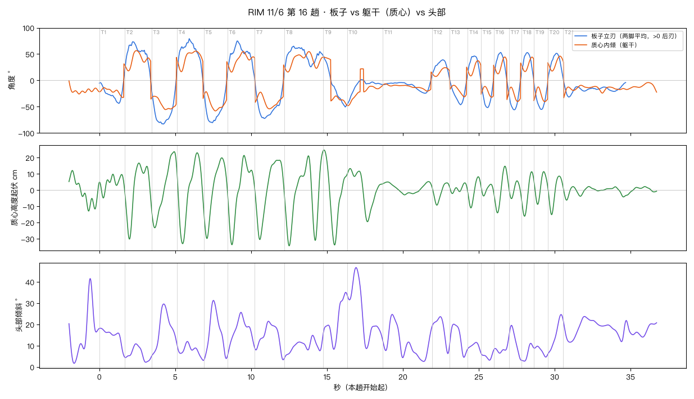
| 弯 | 刃 | 离心力 g | 板立刃 | 质心内倾 | 折叠角 | 起伏 cm | 最低点 | 内倾最大 | 头倾斜 |
|---|---|---|---|---|---|---|---|---|---|
| T1 | 前刃 | 1.06 | 46° | 33° | 13° | 15 | 15% | 93% | 18° |
| T2 | 后刃 | 2.04 | 76° | 57° | 19° | 47 | 17% | 43% | 11° |
| T3 | 前刃 | 1.97 | 83° | 55° | 28° | 47 | 13% | 55% | 30° |
| T4 | 后刃 | 1.87 | 80° | 56° | 24° | 56 | 20% | 70% | 12° |
| T5 | 前刃 | 2.12 | 82° | 58° | 24° | 50 | 14% | 49% | 31° |
| T6 | 后刃 | 1.66 | 76° | 55° | 21° | 55 | 17% | 58% | 26° |
| T7 | 前刃 | 1.65 | 73° | 54° | 19° | 49 | 17% | 49% | 22° |
| T8 | 后刃 | 1.47 | 68° | 55° | 13° | 58 | 12% | 62% | 15° |
| T9 | 前刃 | 1.67 | 52° | 47° | 5° | 59 | 47% | 99% | 35° |
| T10 | 前刃 | 0.39 | 46° | 48° | -2° | 33 | 57% | 3% | 47° |
| T11 | 前刃 | 0.43 | 27° | 20° | 7° | 8 | 44% | 90% | 25° |
| T12 | 后刃 | 0.76 | 41° | 24° | 16° | 14 | 28% | 74% | 24° |
| T13 | 前刃 | 0.95 | 48° | 31° | 17° | 7 | 15% | 82% | 20° |
| T14 | 后刃 | 1.32 | 48° | 37° | 11° | 19 | 23% | 75% | 12° |
| T15 | 前刃 | 1.33 | 53° | 32° | 22° | 7 | 19% | 83% | 8° |
| T16 | 后刃 | 1.67 | 55° | 44° | 11° | 29 | 24% | 72% | 14° |
| T17 | 前刃 | 1.52 | 57° | 40° | 17° | 11 | 20% | 70% | 20° |
| T18 | 后刃 | 1.57 | 54° | 44° | 10° | 27 | 26% | 83% | 11° |
| T19 | 前刃 | 1.47 | 58° | 40° | 17° | 20 | 26% | 76% | 10° |
| T20 | 后刃 | 1.32 | 53° | 46° | 7° | 24 | 24% | 80% | 25° |
| T21 | 前刃 | 0.59 | 33° | 37° | -3° | 8 | 5% | 0% | 24° |